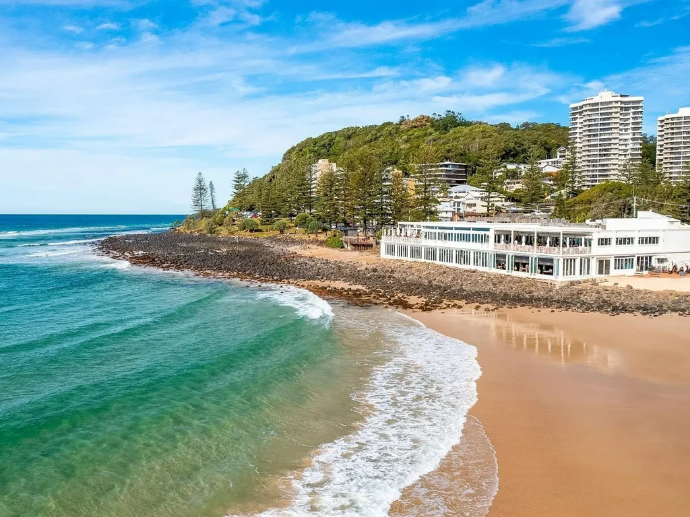
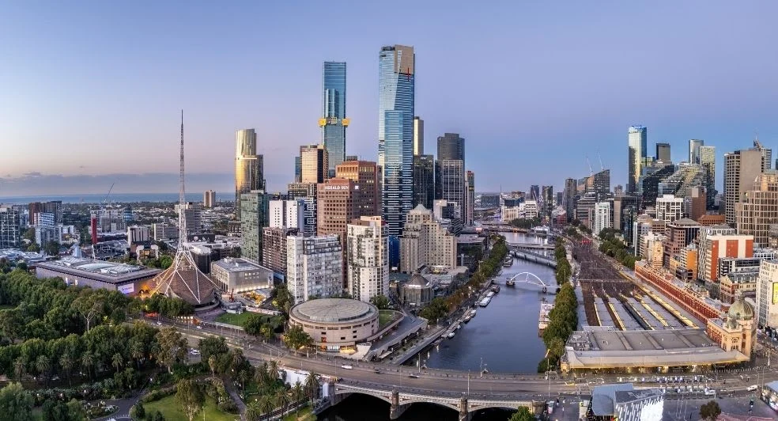

/catseye-beach-landscape.jpg?w=1600&fit=crop)
PROPOSAL
사진 더 보기Australia · November 2026 · Travel Proposal
Australia
학수형을 위한 11월의 호주 — 다섯 가지 여행
Sydney · Whitsundays · Gold Coast · Brisbane · Melbourne
2026년 10월
11월 15일(일) 출발, 21일(토) 귀국. 국제선은 발권을 마쳤고, 오페라하우스에서는 호주 발레단 공연을 보는 저녁으로 다듬었습니다. 날짜별 시간과 장소, 이동과 연락처는 여행 플래너 한 화면에서 보고, 다른 네 가지 안은 비교를 위해 그대로 두었습니다.
11월 호주 여행을 위해 다섯 가지 일정을 준비했습니다. 출발 날짜와 현지 숙박일 수를 먼저 고른 뒤, 이동 횟수와 원하는 체험을 비교해 보세요.
11월 15일 출발·21일 귀국은 1안과 2안입니다. 1안은 시드니 한 도시를 여행하고, 2안도 해밀턴 아일랜드와 브리즈번을 포함합니다. 출발을 나흘 앞당겨 11월 11일에 떠날 수 있다면 3안·4안·5안 중 고를 수 있습니다. 3안은 17일, 4안과 5안은 21일 귀국입니다.
1~3안은 현지 숙박 5박의 7일 일정, 4~5안은 현지 숙박 9박의 11일 일정이며 모두 출국편 기내 1박이 별도입니다. 국제선 직항과 국내선 이용 구간은 안마다 다릅니다. 현지 차량은 기사 포함 여부·이용 시간·견적을 확인해야 하며, 골프도 방문객 자격과 티타임이 확보되어야 확정됩니다. 아래 비용은 두 분 기준 계획 예산입니다.
 사진 더 보기
사진 더 보기


숙박 수는 현지 호텔 기준이며 출국편 기내 1박은 별도입니다. 국내선은 비행 구간 수, 호텔은 서로 다른 숙소 수입니다. 아래 골프 횟수와 국제선은 예약 전 제안입니다.
| 안 | 기간 | 호텔 | 국내선 | 골프 | 국제선 제안 | 2인 계획 예산 |
|---|---|---|---|---|---|---|
| 1안 | 11/15~21 · 5박 7일 | 2곳 | 0회 | 2회 | 아시아나 왕복 | A$24,530 · 약 2,502만 원 |
| 2안 결정 | 11/15~21 · 5박 7일 | 3곳 | 2회 | 1~2회 · 섬 일정 선택에 따라 | 출국 아시아나 · 귀국 대한항공 | A$28,390 · 약 2,896만 원 |
| 3안 | 11/11~17 · 5박 7일 | 3곳 | 2회 | 2회 | 대한항공 왕복 | A$24,728 · 약 2,522만 원 |
| 4안 | 11/11~21 · 9박 11일 | 4곳 | 2회 | 3회 | 대한항공 왕복 | A$33,672 · 약 3,435만 원 |
| 5안 | 11/11~21 · 9박 11일 | 4곳 | 3회 | 3회 | 대한항공 왕복 | A$36,328 · 약 3,705만 원 |
환율 A$1 = ₩1,020 적용, 원화는 만 원 단위 반올림. 항공·숙박·티타임·차량은 확정 견적이 아니며, 선택 체험과 패키지 포함 항목을 정한 뒤 다시 계산합니다. 5안은 11월 14일(토) 멜버른→해밀턴 직항 VA1749의 좌석부터 확인해야 합니다.
2026년 10월 19일 검토한 여행 제안입니다. 예약 완료를 확인하는 자료가 없으므로 항공편, 객실, 티타임, 레스토랑과 투어는 모두 예약 전 확인이 필요합니다. 적힌 시각은 예약된 일정표가 아니라 동선을 검토하기 위한 제안 시각입니다.
모든 시각은 해당 지역의 현지 시각입니다. 11월에는 시드니·멜버른이 한국보다 2시간, 퀸즐랜드가 1시간 빠릅니다. 주를 이동할 때는 현지 출발·도착 시각과 실제 비행시간을 구분해 주세요. 차량 이동시간은 교통 상황에 따른 예상치이며 수하물 수취·픽업 대기·주차 시간은 별도입니다.
1안은 국내선 이동이 없고 시드니 한 도시를 여행합니다. 다만 호텔은 2곳이므로 중간에 짐을 옮깁니다. 산책·미술관·식사 위주로 체험을 줄이면 가장 단순한 동선이 됩니다.
2안은 11월 15일 출발을 유지하면서 시드니와 해밀턴 아일랜드를 함께 볼 수 있습니다. 3안은 11월 11일 출발·17일 귀국으로 섬과 골드코스트에 집중합니다. 두 안 모두 5박 동안 호텔 3곳과 국내선 2회를 이용하므로 이동 부담을 고려해 고르세요.
해변과 섬에서 쉬는 시간을 우선하면 4안, 멜버른의 골프와 레스토랑이 더 궁금하면 5안을 제안합니다. 두 안 모두 호텔 4곳이고, 5안은 국내선을 세 번 이용합니다. 5안은 멜버른 샌드벨트·해밀턴·골드코스트에서 한 라운드씩 치고, 골드코스트 이틀은 벌리헤즈에 묵으며 쇼핑과 카지노는 선택으로 둡니다. 섬으로 가는 토요일 직항(VA1749)과 방문객 티타임을 먼저 확인해야 합니다.
2안으로 정해졌습니다. 국제선은 발권을 마쳤고, 이제 숙소·골프 티타임·공연·레스토랑 예약을 차례로 확정합니다. 일부 골프장은 핸디캡이나 소속 클럽 확인 등 조건이 있어 승인과 예약이 보장되지는 않습니다. 확정된 내용은 여행 플래너에 바로 반영합니다.
/Dine/Pebble-Beach/qualia-resort-Pebble-Beach-pool-sunlounges.jpg?w=1600&fit=crop)